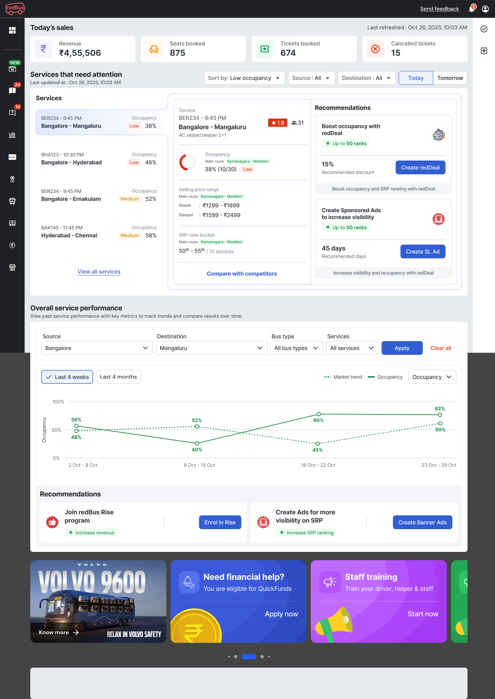
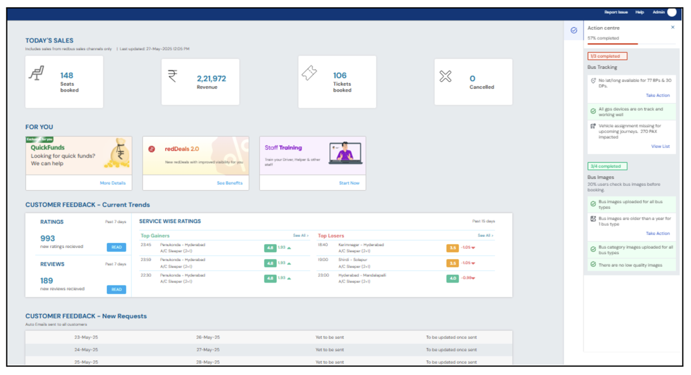
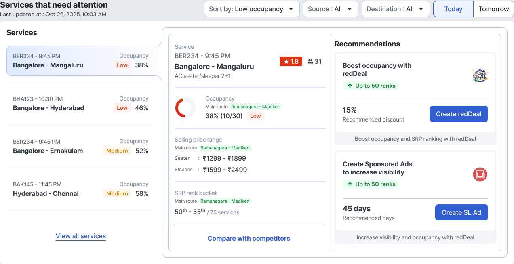

Case 1 · empty & unseen
Fill seats & get found
redDealSponsored AdsRise
The old dashboard was a wall of metrics — operators could read a hundred numbers but not tell which service was in trouble, or what to do about it. I turned it into a to-do list.

The RPW homepage is where every bus operator on redPro starts their day. But it showed them everything at once and prioritised nothing — while the levers that could actually grow their business sat on other pages entirely. Four questions went unanswered:
Before redesigning, I ran a heuristic evaluation of the live dashboard. The page wasn't missing data — it was missing hierarchy, context and a path to action. Promotions sat above operations, internal jargon leaked into the UI, and “what needs me now” was scattered between an inline feed and a separate Action centre.

Six findings shaped the redesign — each mapped to a usability heuristic and a severity.
Each finding became a design goal: impose hierarchy (H8), speak the operator's language (H2), benchmark every metric (H6), surface the day's priority first (H1), unify the action vocabulary (H4), and put the fix one tap from the problem (H7).
I led the homepage end-to-end — the audit, the triage-first bet, the recommendation logic and the final UI — working closely with product, data science and engineering to keep every recommendation explainable and buildable.
From stakeholder feedback and three months of intervention data, three findings did the real steering.
At any moment, an operator cares most about services departing today (DBD 0) and tomorrow (DBD 1) — not last month's averages.
Operators triage by the service at risk, ranked worst-first — they don't read a dashboard top to bottom.
A metric with no benchmark and no next step is noise. Operators wanted “is this good or bad — and what do I do?”
Occupancy is measured at the whole-service level (Omega/GDS, not just redBus seats) and bucketed so a glance tells the story:
At risk — surfaced first, with the strongest recommendations.
Watch — room to push occupancy and rank.
Healthy — protect the price, no nudge needed.
The brief read like a data gap — build operators a richer dashboard. It wasn't. It was a hierarchy and action gap: operators needed the few services that need action surfaced first, in their language, each with a fix one tap away.
Show every metric we have and let operators find what matters.
Surface only the at-risk services, benchmarked, each with one recommended fix. Demote everything else — promos included.
Triage before overview — the first thing on screen is the service that needs action today.
Every metric ships with a competitor benchmark. Context is the product, not the raw value.
A flag without an explainable, recommended action is just anxiety — pair each with a next step.
Time-sensitive decisions earn the top; promos and shelves move below the fold.
I chose a rules-based, explainable matrix over a generic “recommended for you” feed — because operators only trust a nudge they can see the reason for.
The matrix maps a service's occupancy against its SRP rank (search visibility) and surfaces exactly the levers that fit — tapping one opens the flow pre-filled.
Not a screen gallery — every part earns its place by resolving a question operators actually ask. The worst-performing departure is always the first thing they see.

Two tabs — today and tomorrow — with services ranked worst-occupancy first. The at-risk departure is the first thing an operator sees, before any promo or shelf.
Each service is diagnosed against competitors — occupancy, selling-price range, SRP-rank bucket and rating — with a single “compare with competitors” path. The comparison is what makes a number mean something.
Every flag carries one recommended action from the matrix, stating its projected upside before the operator commits — “up to 50 ranks”, a 15% discount, 45 sponsored days — and opens the flow pre-filled, never recommending what's already configured.
Time-sensitive decisions earn the top; a performance trend lets operators zoom out; and the “For You” shelf — seasonal sales, Rise / redDeals, Volvo, staff training — moves to the bottom, present but never competing with the day's priorities.
redDeal, Sponsored Ads, Rise and revMax — four growth products that used to live apart, now surfaced exactly when a service's data calls for them. The homepage becomes an activation surface, not just a report.
The redesign reshapes what the homepage is for — and what it's built to move. Every recommendation traces back to a heuristic it fixes, so the argument holds before a single metric lands.
Editing, not adding. The win wasn't new data — it was choosing a single organising question (“what needs me today?”) and letting it demote everything that didn't answer it.
Designing the recommendation matrix so it never felt arbitrary. Every card had to be explainable — tied to occupancy and rank — and had to carry an honest projection, or operators would stop trusting it.
Closing the loop: showing operators the realised impact after they act on a recommendation, so the homepage learns to earn the next tap.